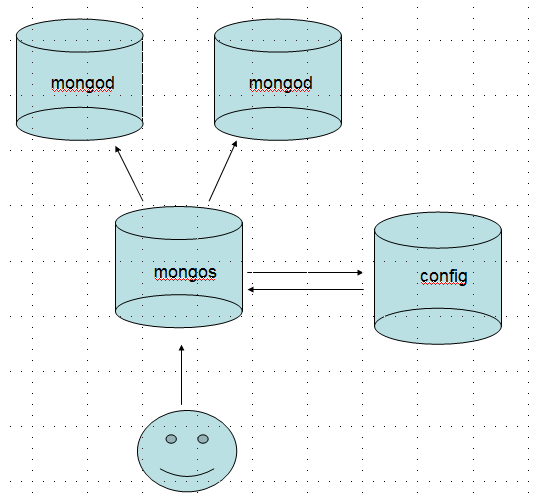
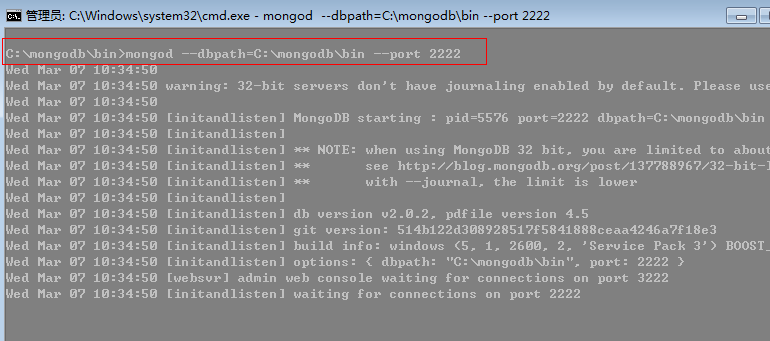
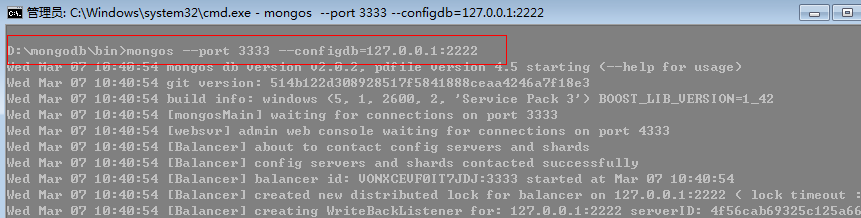
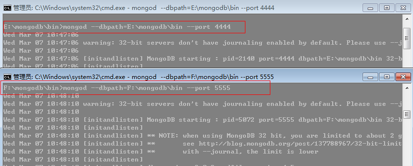
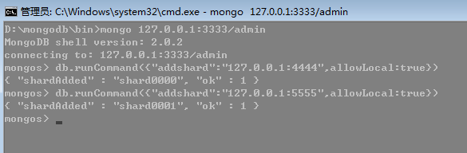
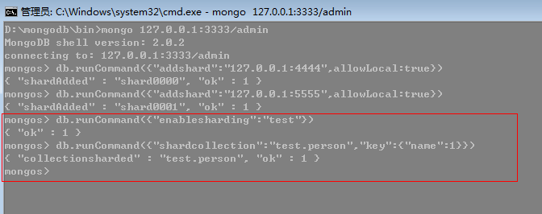
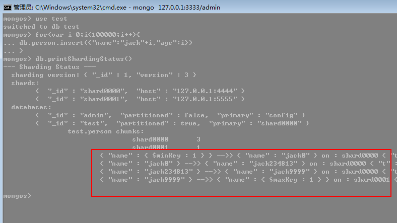

在mongodb里面存在另一种集群，就是分片技术，跟sql server的表分区类似，我们知道当数据量达到T级别的时候，我们的磁盘，内存
就吃不消了，针对这样的场景我们该如何应对。
一：分片
mongodb采用将集合进行拆分，然后将拆分的数据均摊到几个片上的一种解决方案。

下面我对这张图解释一下：
人脸： 代表客户端，客户端肯定说，你数据库分片不分片跟我没关系，我叫你干啥就干啥，没什么好商量的。
mongos： 首先我们要了解”片键“的概念，也就是说拆分集合的依据是什么？按照什么键值进行拆分集合....
好了，mongos就是一个路由服务器，它会根据管理员设置的“片键”将数据分摊到自己管理的mongod集群，数据
和片的对应关系以及相应的配置信息保存在"config服务器"上。
mongod: 一个普通的数据库实例，如果不分片的话，我们会直接连上mongod。
二： 实战
首先我们准备4个mongodb程序，我这里是均摊在C，D，E，F盘上，当然你也可以做多个文件夹的形式。
1：开启config服务器
先前也说了，mongos要把mongod之间的配置放到config服务器里面，理所当然首先开启它，我这里就建立2222端口。

2: 开启mongos服务器
这里要注意的是我们开启的是mongos，不是mongod，同时指定下config服务器，这里我就开启D盘上的mongodb，端口3333。

3：启动mongod服务器
对分片来说，也就是要添加片了，这里开启E，F盘的mongodb，端口为：4444，5555。

4： 服务配置
哈哈，是不是很兴奋，还差最后一点配置我们就可以大功告成。
<1> 先前图中也可以看到，我们client直接跟mongos打交道，也就说明我们要连接mongos服务器，然后将4444，5555的mongod
交给mongos,添加分片也就是addshard()。

这里要注意的是，在addshard中，我们也可以添加副本集，这样能达到更高的稳定性。
<2>片已经集群了，但是mongos不知道该如何切分数据，也就是我们先前所说的片键，在mongodb中设置片键要做两步
①：开启数据库分片功能，命令很简单 enablesharding(),这里我就开启test数据库。
②：指定集合中分片的片键，这里我就指定为person.name字段。

5: 查看效果
好了，至此我们的分片操作全部结束，接下来我们通过mongos向mongodb插入10w记录，然后通过printShardingStatus命令
查看mongodb的数据分片情况。

这里主要看三点信息：
① shards： 我们清楚的看到已经别分为两个片了，shard0000和shard0001。
② databases: 这里有个partitioned字段表示是否分区，这里清楚的看到test已经分区。
③ chunks： 这个很有意思，我们发现集合被砍成四段：
无穷小 —— jack0，jack0 ——jack234813，jack234813——jack9999，jack9999——无穷大。
分区情况为：3：1，从后面的 on shardXXXX也能看得出。